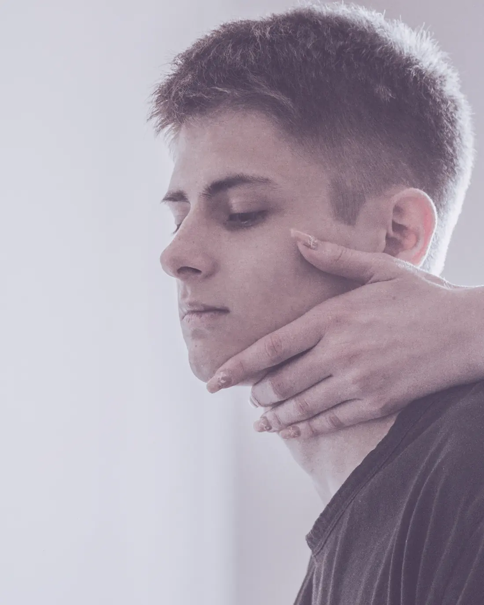

Fisioterapia em face, cabeça e pescoço
Thayla Boscato
Para dor na mandíbula, bruxismo, zumbido e tontura.
Também acompanha a recuperação da cirurgia ortognática. Atendimento no Igara, em Canoas.
Agendar avaliação 5,0 no Google, em 36 avaliaçõesAvaliações no Google
Nas palavras de quem já tratou
5,0
Zumbido
“Meu zumbido, que antes estava em nível 10 numa escala de 0 a 10, caiu para 3 — e às vezes até menos.”
Claudemir C.
DTM
“Indico a Thayla há anos aos meus pacientes para tratamento de DTM. Este ano tive a excelente experiência pessoal de ser tratada por ela.”
Sabrina M.
Bruxismo
“Ela me ajudou soltando pontos gatilhos, liberando minhas dores. E me ensinou vários exercícios para fazer em casa e evitar crises de dores.”
Joici L.
Ortognática
“Faço meu tratamento com a Thayla desde 2018, profissional muito competente, me ajudou muito em aliviar o desconforto geral e temporomandibular desde o diagnóstico, durante e após a cirurgia ortognática.”
Caroline P.
Pescoço e face
“Tenho um problema de zumbido e outras complicações no pescoço e face, melhorei muito com as fisioterapias feitas pela Dra Thayla, ela é muito atenciosa e cuida muito bem de mim.”
Frida K.
Respiração
“Ela que identificou meu problema respiratório, apesar de ter passado por vários médicos e tratarem apenas os sintomas e não a causa.”
Cláudia F.
Palavras que se repetem nas avaliações: humanizado, acolhedor, atenciosa.

Uma especialidade pouco conhecida
Quando a dor está na mandíbula, no rosto ou no pescoço
A articulação da mandíbula, os músculos do rosto e os do pescoço trabalham juntos o dia inteiro: para falar, mastigar, engolir e manter a cabeça erguida.
Quando um deles fica sobrecarregado, a dor nem sempre aparece onde começou. Pode virar estalo ao abrir a boca, dor de cabeça, ouvido zumbindo ou tontura. A fisioterapia orofacial procura essa origem e trata com as mãos e com exercícios.
DTM e dor na ATM
Dor perto do ouvido, estalos, mandíbula que trava ou cansa ao mastigar.
Bruxismo
Para quem aperta ou range os dentes, de dia ou dormindo, e acorda com o rosto dolorido.
Zumbido
Quando o barulho no ouvido vem junto com tensão na mandíbula e no pescoço.
Labirintite e tontura
Cuidado para a tontura e a sensação de desequilíbrio que atrapalham o dia a dia.
Cirurgia ortognática
Acompanhamento antes e depois da cirurgia, para recuperar movimento e conforto.
Dor no pescoço
Dor e rigidez na região cervical, que muitas vezes acompanham a dor de cabeça.
Como funciona
Um tratamento feito para o seu caso
Escuta e avaliação
Você conta o que sente, desde quando e o que já tentou. A avaliação olha para todos os sintomas, não só para o que dói mais.
Tratamento com as mãos
Liberação de pontos-gatilho e outras técnicas manuais para soltar a musculatura da face, da mandíbula e do pescoço.
Exercícios para casa
Você aprende exercícios para fazer entre as sessões e evitar novas crises. O plano acompanha a sua evolução.
Atendimento com hora marcada
Agende sua avaliação
Mande uma mensagem pelo WhatsApp, conte rapidamente o que sente e combine o melhor horário.
WhatsApp (51) 99101-6179 Ligar agora
Segunda a sexta, das 8h às 18h.
Onde fica
Av. Armando Fajardo, 2083
Igara, Canoas, RS
- Estacionamento no local, gratuito
- Acesso para cadeira de rodas
- Cartão de crédito, débito e aproximação
- Empresa de empreendedoras, que acolhe a comunidade LGBTQ+
Recado de quem fez esta página
Para Thayla Boscato
Sou o Conrado Lemos, desenvolvedor aqui de Canoas. Montei esta página para mostrar como ficaria o seu site. Tudo acima é o que o paciente veria.
- A nota, as avaliações, os horários, o endereço e as comodidades vieram do seu perfil no Google.
- Todas as fotos são ilustrativas, de banco de imagens. Na versão final entram fotos profissionais suas e do seu consultório.
- Os textos sobre os tratamentos e as avaliações em destaque são revisados e escolhidos por você.
R$ 1.000, com o site no ar em até 3 dias, no seu próprio domínio. O pagamento é só na entrega, depois da sua aprovação. O domínio é à parte, cerca de R$ 40 a R$ 55 por ano.
Gostou? É só responder a minha mensagem no WhatsApp.